×
The 1 train used to run with the 9 train. It was called the 1/9 service.
The deepest subway stop is the 1 train's 191st Street station. The platform is 180 feet below street level.
×
Lenox Avenue Invert was completed in less than eight months. The $82 million project rebuilt the flooded invert (floor) of the Lenox Av 2 and 3 line between 110th and 116th Streets and restores the 116th Street station.
The 2 Train has 61 train stops and 71 (including limited rush hour service to New Lots Avenue).
×
The 1995 film Die Hard with a Vengeance features Simon Gruber (Jeremy Irons) planting a bomb on a 3 train in order to blow up the Wall Street station.
From 1967–1979, the color of the bullet used to be light blue.
×
86th St is the 10th busiest station in NYC.
The 4 train was once considered the worst train to be on in the 70s and 80s, especially during the night. People referred to it as "Mugger's Express". Crime became so bad that people took matters into their own hands to form the Guardian Angels.
×
The 5 train can run along eight different train lines in its service.
In 1979, with the color coding of subway routes based on their trunk line in Manhattan, the 5 service's color was changed to apple green, as it goes via the Lexington Avenue Line in Manhattan.
×
Due to the popularity of the book and movie The Taking of Pelham 123, train dispatchers generally avoid giving trains leaving Pelham Bay Park a 1:23 departure time.
There is an abandoned station called City Hall. Due to the infrastructural shortfalls, as well as its proximity to the nearby Brooklyn Bridge station, passenger service was discontinued on December 31, 1945, although the station is still used as a turning loop for 6 trains.
×
The 7 train was the last train to get AC. 99% of trains received AC by 1993.
The northern end of the Mets-Willets Point station has a very long southbound side platform is abandoned and gated off.
×
The A train has a train route that consists of more than 31 miles.
The distance the Howard Beach/JFK Airport and Broad Channel stations in Queens is 3.5 miles.
×
You can take 4, B or D trains to 161 St, and travel across the footbridge over Sedgwick Ave and the Major Deegan Expressway and see the abandoned Sedgwick Avenue and Jerome-Anderson Avenue stations.
The B train used to run in Queens in the 80s, along the current F line.
×
There's a pretty dark poem written on the ceiling of the tunnel from 42nd Street to Port Authority stations. It was made in 1991 and is called "The Commuter's Lament."
The abandoned track on one of the Hoyt-Schermerhorn Streets platform leads to the Court St station, which is home to the NYC Transit Museum.
×
The D train line is considered to be the dirtiest line.
At the 59th St-Columbus Circle station, the center of three island platforms has been closed since 1981 because trains can't easily open their doors on both sides simultaneously.
×
The E train used to run in Brooklyn on the train line that the A and C currently run on.
The E train has 32 trains and 34 other stops (including limited rush hour service to 179th Street).
×
The Smith-Ninth streets station is the highest at 88 feet above street level.
From 1967-79, the bullet logo was purple.
×
Michael Jackson filmed the music video for "Bad" at the Hoyt-Schermerhorn subway station.
When express service on the Culver line ended in 1976, the lower level of the Bergen St station closed and fell into disrepair.
The G train is the only train that doesn’t have train stops in Manhattan.
×
Part of the Chambers Street was converted into the basement of the Municipal Archives. Another platform was removed to accommodate the expansion of Brooklyn Bridge station.
It's the oldest remaining elevated train route. It opened in 1885, and was known at the time as part of the Brooklyn "El" lines.
×
The L train is the cleanest train line.
The L, being a local train, was originally given the LL designation when letters were assigned to the BMT division. From 1928 to 1967, the same service was assigned the BMT number 16.
L train’s ridership increased due to gentrification along the train line.
×
The M train’s line was merged with the V and W train lines after those train services were discontinued in 2010.
The September 11, 2001 attacks caused a temporary reduction of the M to a full-time shuttle until September 17. Then it was extended full-time over the BMT Sea Beach Line to Stillwell Avenue, replacing the N, until October 28.
×
The route that is now the N was originally BMT service 4, known as the Sea Beach Line or Sea Beach Express.
N trains that currently short-turn at 57th Street will be extended to 96th Street using the Second Avenue Subway when it opens.
×
Next time when you go from Brooklyn to Manhattan on the Q train, keep a lookout for moving art called "Masstransiscope".
The Q will be rerouted from 57th Street to 96th Street via the BMT 63rd Street Line and the IND Second Avenue Line when the first phase of the Second Avenue Subway opens in December 2016.
×
Before the Great Depression, a Second System was planned for the IND line to connect the Rockaways and midtown Manhattan. A full station and tracks were installed in Queens that were to connect to the Roosevelt Avenue-74th Street stop but were never used. You can see remnants where these tracks now dead-end at 78th Street.
In 2004, Spider-Man 2 featured a fight and crash scene between Spider-Man and Doctor Octopus on an out-of-control elevated R train in Manhattan. In reality, the R is not elevated at all; the scenes involving the train were actually filmed in Chicago, on the Loop, and the trains depicted are 2200 Series "L" train cars (with blinker doors not sliding doors as in New York).
×
The Jamaica Line is more than 13 miles long.
The actual shade of brown that signifies the J and Z line is known as "terra cotta brown."
When the Archer Avenue Line first opened, every subway car on the J and Z's fleet was completely graffiti-free, because the MTA hoped that Queens passengers would transfer to the J/Z from the E, F, and R.
×
A doorway from a platform in the Times Square-42nd Street station used to lead straight into the Knickerbocker Hotel, where F. Scott Fitzgerald and co. attended lavish parties. Today the MTA owns the space behind the door.
There are the signal maintainers, who are trained at the Signals Learning Center in the 14th St and 8th Ave station, which has a signal light that actually changes color outside the door.
58 Joralemon Street is not a home at all, but a secret subway exit and ventilation point disguised as a Greek Revival brownstone.
×
In 2010, the V and W trains were terminated due to budget constraints.
In July 2015, the MTA announced that they were considering restoring the W train and on Monday, November 7, 2016, it returned to service!
Fun Facts
☰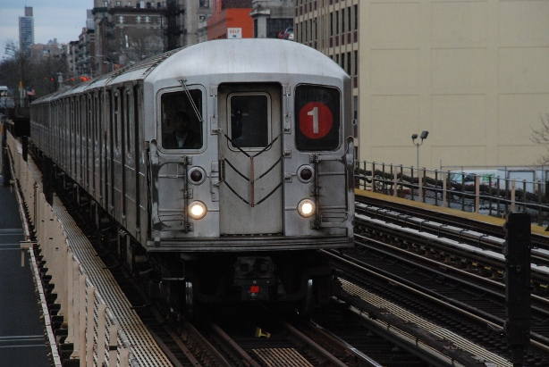 ☰ 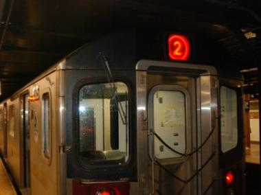 ☰ 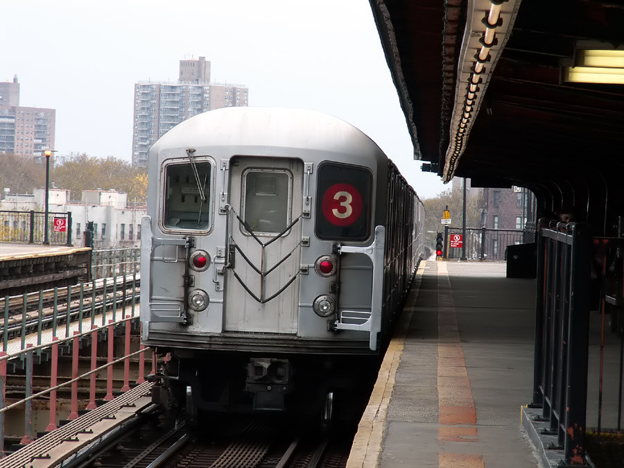☰ 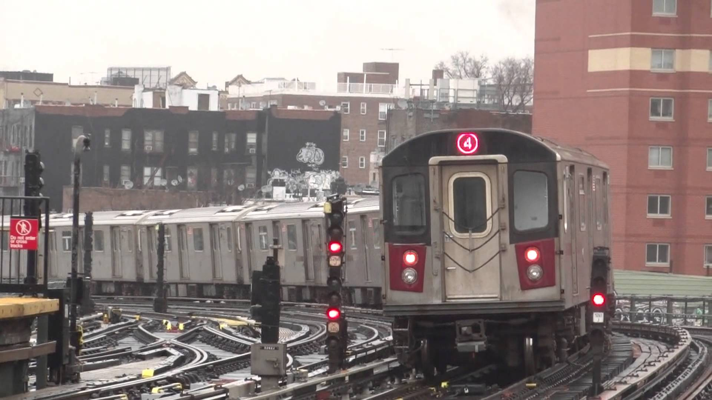 ☰ 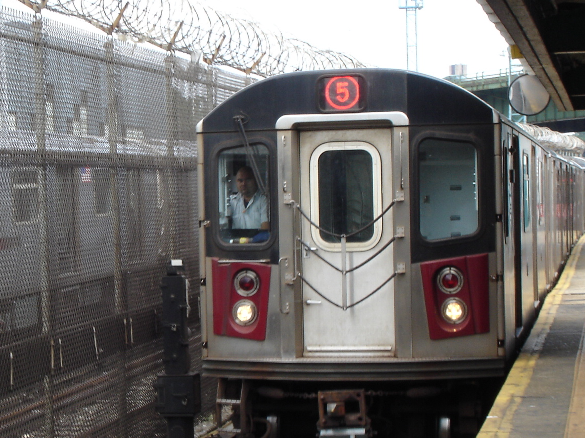 ☰ 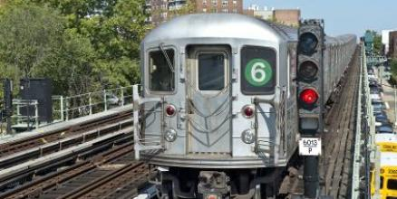
☰ 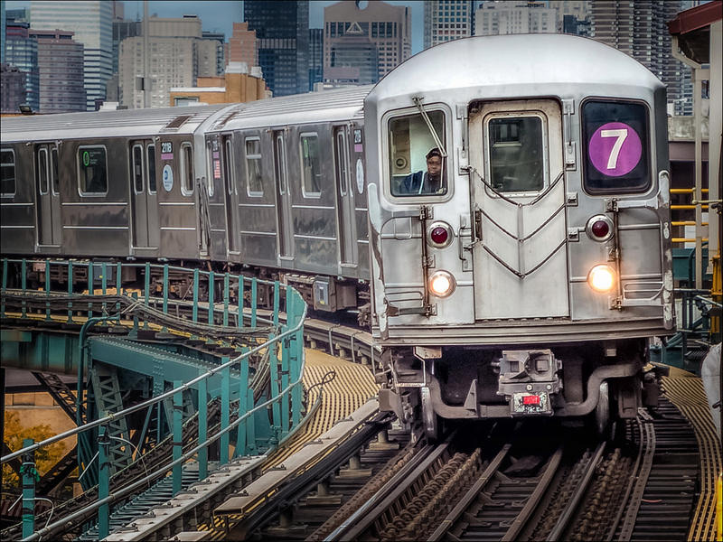 ☰ 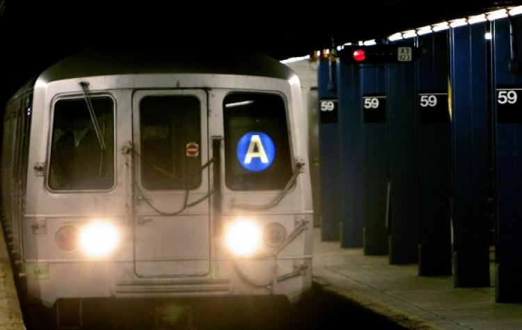 ☰ 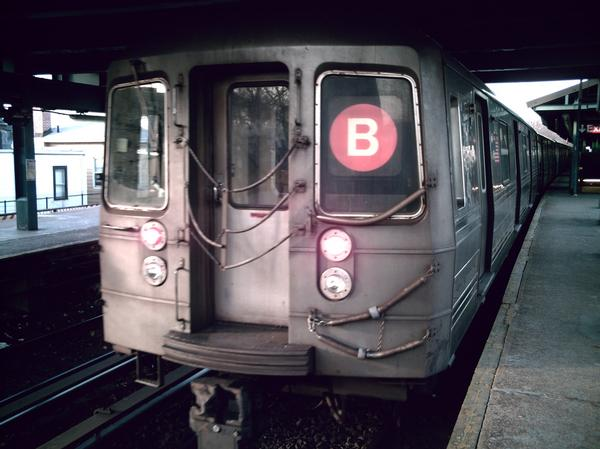
☰ 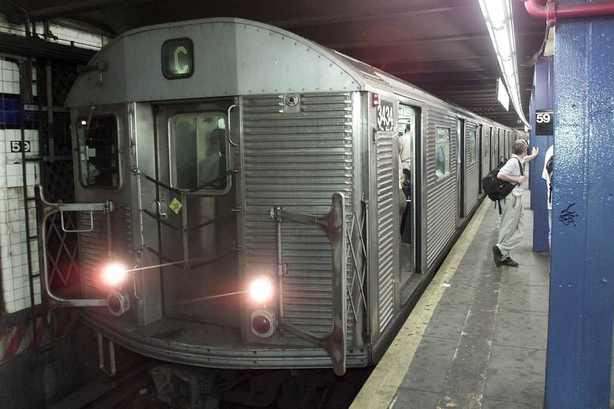 ☰ 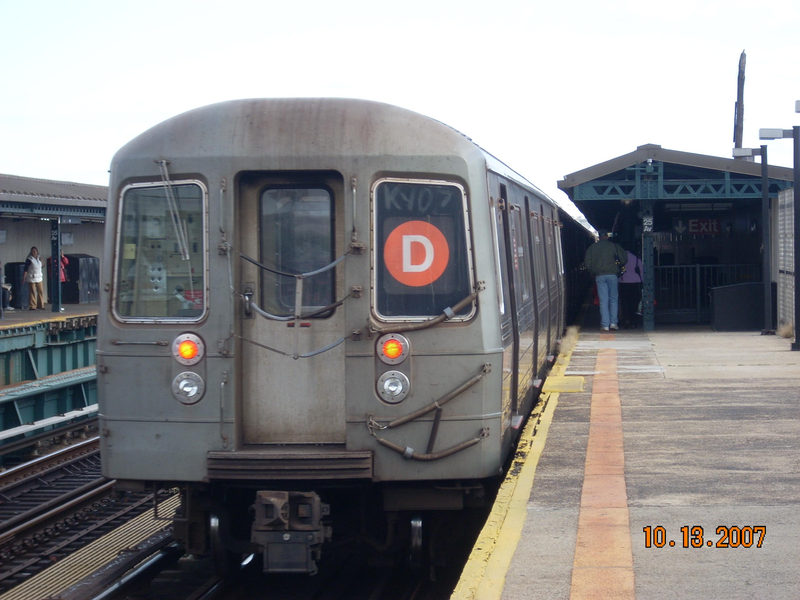 ☰ 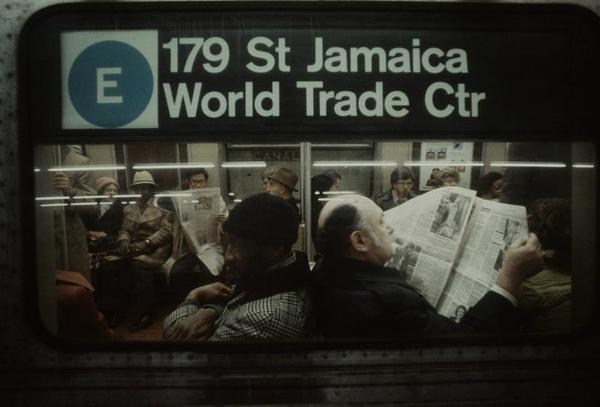
☰ 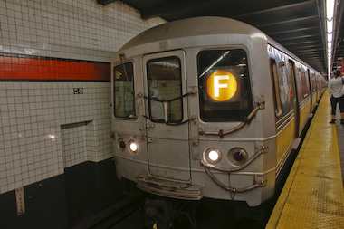 ☰ 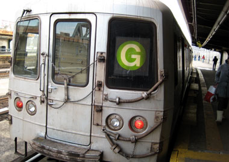 ☰ 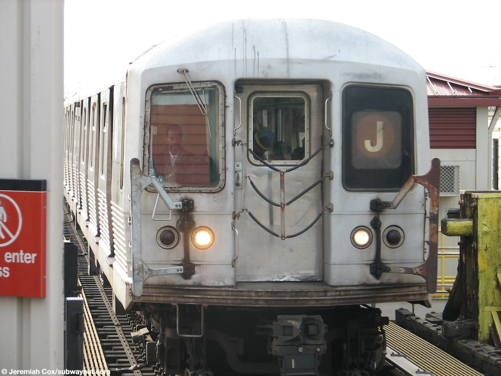
☰ 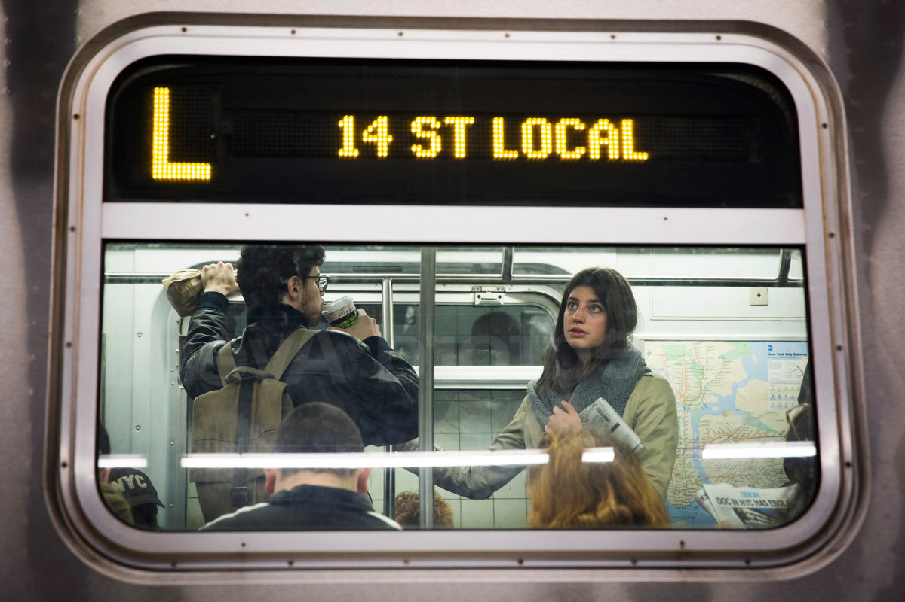 ☰ 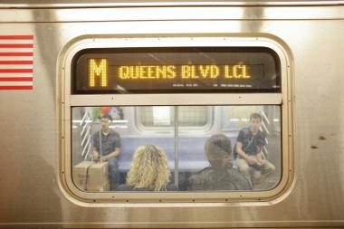 ☰ 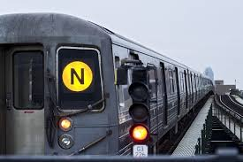
☰ 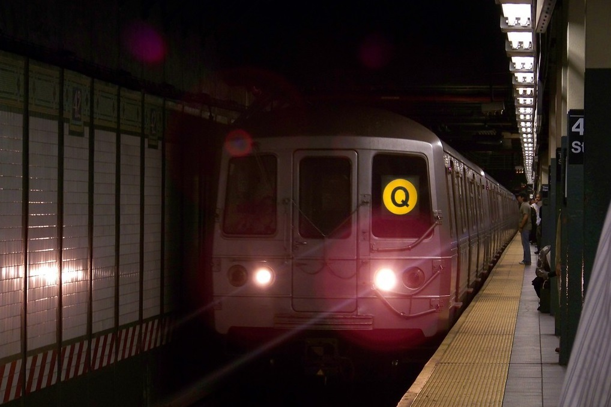 ☰ 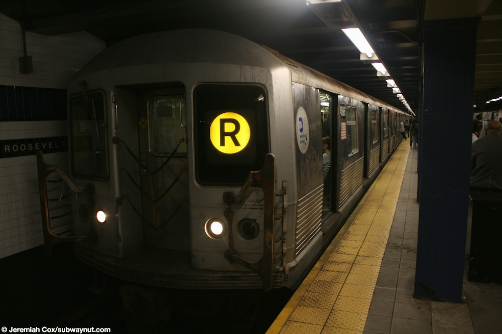 ☰ 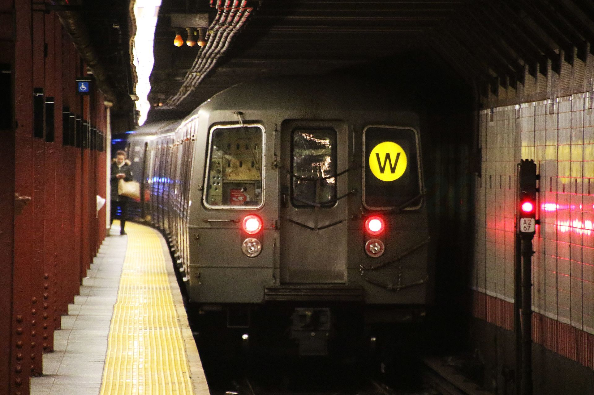
☰ 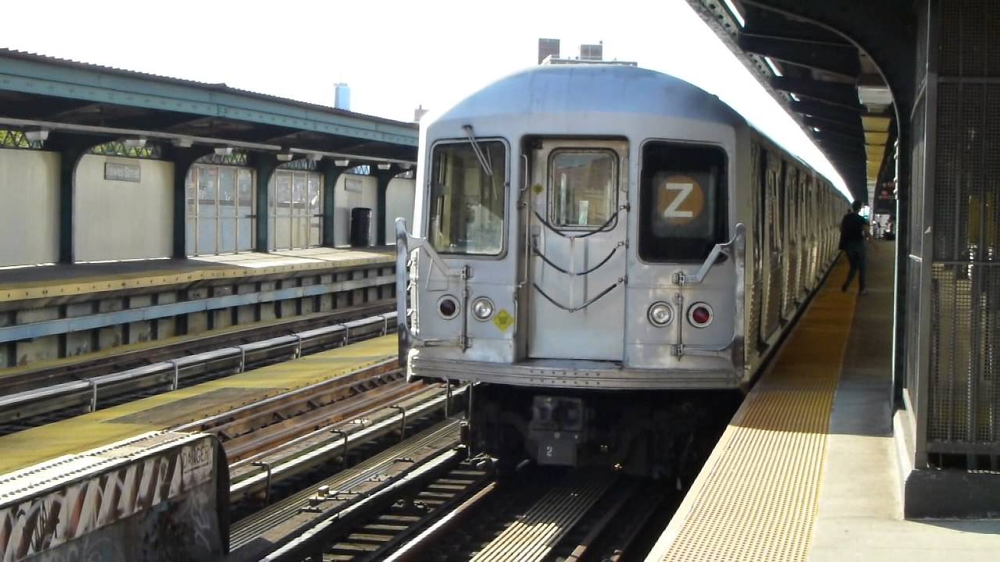 ☰ 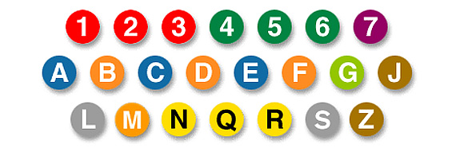